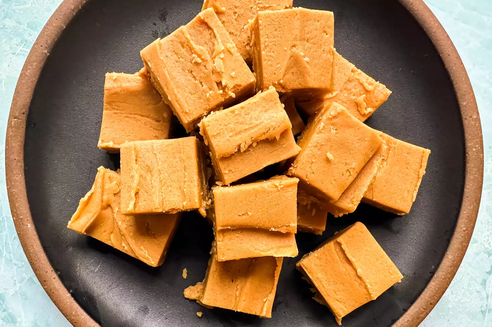

Home
Pizza
Pancakes
Peanut Butter Fudge

Creamy peanut butter fudge dessert
A recipe that takes less than 10 minutes to prepare, chills for just an hour, and makes a super creamy peanut butter fudge.
Ingredients
- 1 (16-ounce) container frosting (vanilla or cream cheese are favorites), about 2 cups
- 1 (15-ounce) container no-stir creamy peanut butter, such as Jif or Skippy, about 2 cups
- Prepare the pan: Line an 8 x 8-inch square baking dish with parchment paper.
- Combine frosting and peanut butter: Combine the frosting and peanut butter in a medium microwave-safe bowl. Don’t worry about mixing them together yet. Microwave on high for 30 seconds, stir with a spatula, and microwave again for 30 seconds. Mix again until completely smooth.
- Pour into the pan and refrigerate: Pour into the prepared pan. You can press some chopped peanuts or peanut butter cups into the top or drizzle with melted chocolate if you like. Refrigerate for at least 1 hour to set. Use the parchment to remove from the pan and cut into 24 pieces to serve. Store in an air-tight container in the fridge for up to a week.